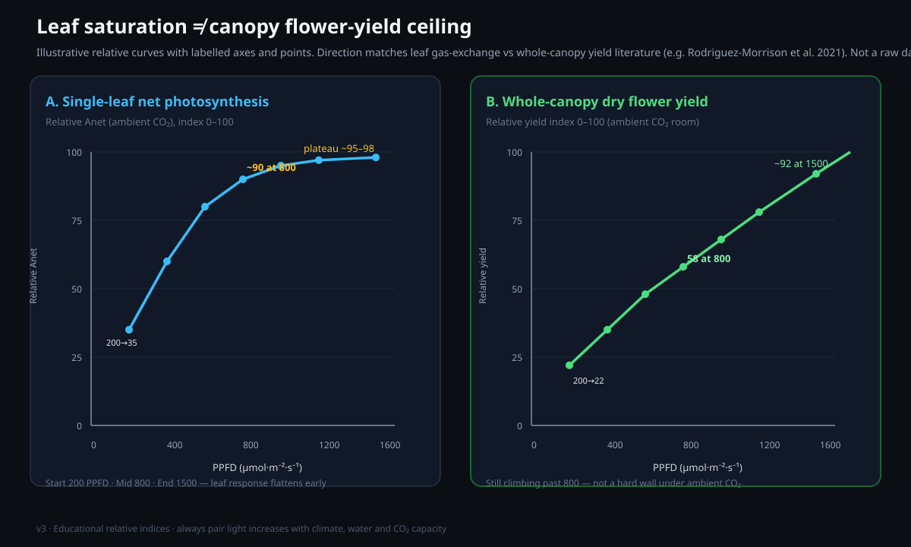

Lighting: spectrum, PPFD and DLI
This paper gives basic information about how a grow light operates. It gives the definitions of the primary numbers and the targets for each stage. It also shows how to find problems before they cause very bad damage to a crop.
Purpose and scope
Light is the energy that a plant changes into sugar. Light is the parameter with the largest effect that you control in a grow room. This paper starts with the basic information. It gives the definition of each term and targets with numbers for each stage. It also gives information about the change of the light cycle that causes flowering.
The plant absorbs energy from light. The plant uses this energy to make sugar from CO2 in the air and water from the roots. This production of sugar is photosynthesis. Thus when the quantity of light that the plant can use increases, growth increases until CO2, water or temperature becomes the limiting factor.[8] The three primary numbers are PPFD (how bright the light is at this time), DLI (the total quantity of light each day) and spectrum (the colors in the light). This paper gives the definition of each term the first time that it occurs.
This paper gives the targets. The light acclimation paper shows how to increase the light slowly to these targets. Thus the new plants acclimate, and bleaching does not occur.
Definitions
When you know the basic information about these five terms, the other parts of this paper are easy. All five terms are about the same item: the quantity of light that a plant can use.
Evidence and limitations
We want each paper to be correct. Thus we examine each paper for information that is not solid. This information comes from the view of one grower, from a small number of sources, or from grower methods that have no controlled test. We identify this information, and we do not show it as solid.
Frequently there is no paper for the decision that you must make. Then we use the reports of other growers and the methods that work in the rooms that we know. This information can help you, but it is not the result of a laboratory test. Use the methods that work for your plants, for your room and for your meters. If a table does not agree with your crop, use the data from your crop and record the difference.
- The definitions of PAR, PPFD and DLI. The length of the night in the photoperiod controls flowering.
- More light increases the yield only until a different condition becomes the limit (Liebig).
- Efficacy ranges for new LED fixtures. The ranges change with time, thus examine the current DLC data and the PPFD maps.
- Tables of PPFD for each stage for indoor cannabis, with CO₂ enrichment and without CO₂ enrichment.
- Checks of uniformity with a PPFD map of 9 points.
- The inverse-square law as an accurate formula for the height at which LED panels with many bars hang. Use maps and meters.
- Red light as the primary mechanism that causes flowering. The photoperiod is the primary mechanism, and R:FR has an effect on morphology.
- UV-B as a sure method to increase potency. The data are mixed, and UV-B has a risk to safety.
If you find an error, make a report. We will correct it. Make the report on GitHub, with the name of the paper and the information that is incorrect. If you have a source, include it: Make a report of an accuracy problem. The regulations, labels and licenses of your area always override each procedure in these papers. The label weak in a paper shows the points where the risk of an error is highest.
Effect of each wavelength on the plant
Blue light, approximately 400 to 500 nm, keeps plants compact with short internodes. Growth with higher density and more resin in flower also has a relation to blue light.[3] Red light, 600 to 700 nm, is the range with the highest efficiency for photosynthesis. It causes flowering and stretch.[7]
‘Full-spectrum white’ LEDs have a color temperature in Kelvin. A higher temperature in K and light with more blue (approximately 4000 to 6500K) is better for the vegetative stage. A lower temperature in K and light with more red (approximately 3000 to 3500K) is better for the flowering stage. A good white spectrum with a wide range is satisfactory for the two stages for a new grower. Do not try to find the best spectrum at the start. Intensity has a much larger effect on yield than the selection of the best colors.
| Range (nm) | Name | Primary effect | When it is important |
|---|---|---|---|
| 280 to 400 | UV | Stress response and possible resin. Hazard to safety. | Optional, at the end of the flowering stage |
| 400 to 500 | Blue | Compact growth, short internodes, thicker leaves | Vegetative stage |
| 500 to 600 | Green | Goes deeper into the canopy than many growers think | Small effect, all stages |
| 600 to 700 | Red | Highest efficiency for photosynthesis. A low quantity of blue light and far-red light cause more stretch. The photoperiod causes flowering. | Flowering stage |
| 700 to 750 | Far-red | Makes the dark response faster. Adds stem stretch. | Only for small adjustments |
A full-spectrum white LED of good quality is satisfactory for the vegetative stage and the flowering stage. Intensity has a larger effect than the adjustment of the spectrum. Thus control the PPFD and the DLI before you adjust the colors.

PPFD and DLI targets at each growth stage
New tissue cannot use light of high intensity. Thus the targets increase when the plant is in a subsequent stage. The target for clones and seedlings is approximately 100 to 250 PPFD (DLI approximately 6 to 16 mol).[1] The target for the vegetative stage, from the first part to the last part, is approximately 300 to 600 PPFD (DLI approximately 20 to 35 mol). The target for the flowering stage without added CO2 is approximately 700 to 900 PPFD (DLI approximately 30 to 45 mol).[2]
A PPFD of more than approximately 900 gives a good result only if you also increase the CO2 to 1000 to 1200 ppm. You must also control the temperature and the humidity more accurately.[8] If you do not do this, more light causes only stress and bleaching. The DLI includes the intensity and the hours together. Thus you can get the same dose each day with a lower PPFD for more hours (vegetative stage at 18/6). You can also use a higher PPFD for a smaller number of hours (flowering stage at 12/12).
| Stage | PPFD (umol/m2/s) | DLI (mol/m2/day) | Photoperiod |
|---|---|---|---|
| Clone / seedling | 100 to 250 | approximately 6 to 16 | 18/6 |
| Vegetative stage, first part | 300 to 450 | approximately 20 to 29 | 18/6 |
| Vegetative stage, last part | 450 to 600 | approximately 29 to 39 | 18/6 |
| Flowering stage (no CO2) | 700 to 900 | approximately 30 to 39 | 12/12 |
| Flowering stage (CO2 1000 to 1200 ppm) | 1000 to 1400 | approximately 40 to 60 | 12/12 |
How the length of the day causes flowering
Photoperiod cannabis stays in the vegetative stage in long days (usually 18/6). Flowering starts when you change the light cycle to 12 hours of light and 12 hours of continuous darkness.[4] This change is the start of the flowering stage.
The plant measures the darkness, not the hours of light. The plant counts only the hours when the lights are off. If light occurs in the middle of the dark period, also for a short time, the plant starts to count again from zero.
A pigment in the leaves causes this. The pigment is phytochrome. Phytochrome is Pr or Pfr. Light changes Pr to Pfr, and darkness slowly changes Pfr to Pr. The ratio of Pr to Pfr shows the plant the length of the night.
When the dark period has sufficient length, phytochrome causes the production of florigen. Florigen is a hormone that moves in the plant. It moves the signal from the leaves to the growing tips, to start the production of buds.[5]
A light leak makes the phytochrome start again in the middle of the cycle. Small lights can cause this: for example a phone screen, an indicator LED, or a pinhole in a tent when the lights are off. These lights can stop flowering, or cause the plant to go back to the vegetative stage. They can also cause hermaphrodites.[4]
Close the pinholes. Put a cover on each indicator LED. Use light-proof ducts. If you can see light in the dark period, the plant can also receive it.
Light leaks in the dark period are the primary flowering problem for new growers. The problems are: flowering stops, the plant goes back to the vegetative stage, or hermaphrodites occur. Phytochrome senses far-red light and red light.
Selection of a fixture: LED, HPS or CMH
An LED has the highest efficiency: approximately 2.7 to 3.0 umol/J for good fixtures (2.0 to 2.3 for budget units). It also operates at a lower temperature and has a longer life.[6] HPS (high-pressure sodium) has approximately 1.7 to 1.9 umol/J. It operates at a high temperature, but its cost is low. CMH/LEC (ceramic metal halide) has a lower efficacy, approximately 1.3 to 1.9 umol/J, but it has a good broad spectrum.
Compare the efficacy (umol/J). For the same cost of electricity, a 3.0 umol/J LED makes approximately 60% more light for plants than a double-ended HPS of approximately 1.85 umol/J.[6] For new growers, the selection with the lowest risk is a full-spectrum LED of good quality. It must have a PPFD map from the manufacturer and an efficacy of approximately 2.5 umol/J or more. Do not use the ‘equivalent watt’ values of the supplier, because they are too high. Use the PPF (total umol/s) and the coverage.
| Type | Efficacy (umol/J) | Heat | Cost at the start | Best for |
|---|---|---|---|---|
| LED | 2.0 to 3.0 | Low | Higher | Standard selection, all stages |
| HPS | 1.7 to 1.9 | High | Low | Systems with a low cost. Flowering stage with more red light. |
| CMH / LEC | 1.3 to 1.9 | Moderate | Moderate | Broad spectrum, with some UV |
Height and intensity for each stage
Intensity decreases when the distance increases. In the inverse-square law, the light is a quarter at two times the distance. This relation is for a point source. For an LED bar, the relation gives only an approximate result. Thus measure the PPFD with a meter. Do not use only the relation.
The height is the large adjustment of intensity, and the dimmer is the small adjustment. Hang the fixture at approximately 60 cm (24 in) for seedlings and clones. Hang it at approximately 45 cm (18 in) for the vegetative stage and at approximately 30 to 40 cm (12 to 16 in) for the flowering stage. Then adjust with the dimmer and a PAR meter.
Make sure of the coverage: measure the PPFD at nine points. The points are the four corners, the four midpoints of the edges, and the center. The target for the ratio of the minimum to the average is more than 0.75. Thus the plants at the edge get sufficient light, and the center does not have bleaching. When you hang the fixture higher, the peak intensity decreases and the light is more equal in the area. Thus use the PPFD map of the manufacturer as the start point, and make sure with readings at the canopy height.
| Stage | Height of the fixture | Target PPFD | Photoperiod |
|---|---|---|---|
| Clone / seedling | approximately 60 cm (24 in) | 100 to 300 | 18/6 |
| Vegetative stage | approximately 45 cm (18 in) | 300 to 600 | 18/6 |
| Flowering stage | approximately 30 to 40 cm (12 to 16 in) | 700 to 900 | 12/12 |
Use the light acclimation paper with this paper. Increase the dimmer setting or lower the fixture in small steps during some days. Do not change a new clone immediately to the full intensity.
Frequent problems with light
Too much light shows these symptoms: bleaching (white or yellow bud tips directly below the fixture), ‘taco’ leaves (the edges are up), and faded color. The symptoms occur also when the nutrients are correct. To correct the problem, decrease the intensity of the light or increase the height of the fixture. Do not apply more feed.
Far-red light (approximately 730 nm) can make the change to darkness faster with the phytochrome system. It can also cause a small quantity of stretch in the plants.[4] Many growers use UV-B in the last 1 to 2 weeks to increase potency. But the data do not show that UV-B always increases cannabinoids or yield.[2] UV-B also has risks for the eyes, for the skin and for stress in the plant. UV-B is optional, and it is for advanced growers.
| Symptom | Possible cause | Correction |
|---|---|---|
| Bleaching, white tops below the fixture | Too much PPFD | Increase the height of the light or decrease its intensity. Do not apply feed. |
| ‘Taco’ leaves (the edges are up) | Stress from light and heat | Increase the height of the light. Measure the temperature of the leaf surface. |
| Growth with stretch and pale color | Not sufficient light, or the fixture is too far above the plants | Lower the fixture or increase the intensity |
| Flowering stops, or the plant goes back to the vegetative stage | Light leak during the dark period | Make the room light-tight |
| Tops with heat damage, PPFD is correct | Radiant heat (mostly from HPS) | Increase the height of the fixture. Monitor the leaf temperature. |
Expected results and limitations
More light helps only until a different item (CO2, water, nutrients, temperature or genetics) becomes the limiting factor. After saturation, you have the cost of electricity and heat, but the yield does not increase. Then stress occurs.[1]
- Without CO2, a maximum of approximately 700 to 900 PPFD, or approximately 35 to 45 mol DLI, is correct in the flowering stage. In the range of 1000 to 1400 PPFD, CO2, cooling and humidity control are necessary in the full room. A brighter light is not sufficient.
- First, make the intensity, the dose and the photoperiod correct. Changes in the spectrum, for example far-red and UV, are small adjustments. They are not the primary control.
- Select a fixture for its efficacy and a measured PPFD map. Use the targets for each stage and prevent light leaks in the dark period. Then the lighting is not a limiting factor.
When the lighting is correct, the other items are climate, feed and genetics. The light acclimation paper shows how to increase the light safely. The flowering stages paper gives information about the changes in the plant after the start of flowering.
References
- Rodriguez-Morrison, V., Llewellyn, D., & Zheng, Y. (2021). Cannabis Yield, Potency, and Leaf Photosynthesis Respond Differently to Increasing Light Levels in an Indoor Environment. Frontiers in Plant Science, 12, 646020. https://doi.org/10.3389/fpls.2021.646020
- Llewellyn, D., Golem, S., Foley, E., Dinka, S., Jones, A.M.P., & Zheng, Y. (2022). Indoor grown cannabis yield increased proportionally with light intensity, but ultraviolet radiation did not affect yield or cannabinoid content. Frontiers in Plant Science, 13, 974018. https://doi.org/10.3389/fpls.2022.974018
- Magagnini, G., Grassi, G., & Kotiranta, S. (2018). The Effect of Light Spectrum on the Morphology and Cannabinoid Content of Cannabis sativa L. Medical Cannabis and Cannabinoids, 1(1), 19-27. https://doi.org/10.1159/000489030
- Kusuma, P., Westmoreland, F.M., Zhen, S., & Bugbee, B. (2021). Photons from NIR LEDs can delay flowering in short-day soybean and Cannabis: Implications for phytochrome activity. PLOS ONE, 16(7), e0255232. https://doi.org/10.1371/journal.pone.0255232
- Eichhorn Bilodeau, S., Wu, B.-S., Rufyikiri, A.-S., MacPherson, S., & Lefsrud, M. (2019). An Update on Plant Photobiology and Implications for Cannabis Production. Frontiers in Plant Science, 10, 296. https://doi.org/10.3389/fpls.2019.00296
- Nelson, J.A., & Bugbee, B. (2014). Economic Analysis of Greenhouse Lighting: Light Emitting Diodes vs. High Intensity Discharge Fixtures. PLOS ONE, 9(6), e99010. https://doi.org/10.1371/journal.pone.0099010
- Westmoreland, F.M., Kusuma, P., & Bugbee, B. (2021). Cannabis lighting: Decreasing blue photon fraction increases yield but efficacy is more important for cost effective production of cannabinoids. PLOS ONE, 16(3), e0248988. https://doi.org/10.1371/journal.pone.0248988
- Chandra, S., Lata, H., Khan, I.A., & ElSohly, M.A. (2008). Photosynthetic response of Cannabis sativa L. to variations in photosynthetic photon flux densities, temperature and CO2 conditions. Physiology and Molecular Biology of Plants, 14(4), 299-306. https://doi.org/10.1007/s12298-008-0027-x
- Kotiranta, S., Pihlava, J.-M., Kotilainen, T., & Palonen, P. (2024). High light intensity improves yield of specialized metabolites in medicinal cannabis (Cannabis sativa L.), resulting from both higher inflorescence mass and concentrations of metabolites. Industrial Crops and Products, 211, 118210. https://doi.org/10.1016/j.indcrop.2024.118210
Each citation in the paper, for example [1], refers to an item in this list. Each item is a primary source or an instruction from an authority, unless the item shows a different type. The results of cannabis tissue culture change much with the genotype. Before you use the dilutions, hormone doses and local regulations, make sure that they agree with the primary sources.